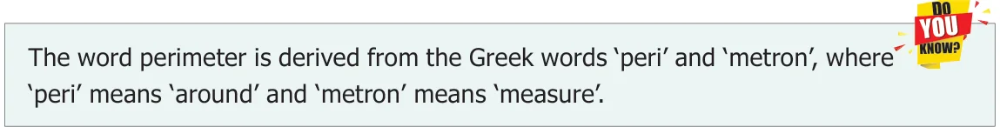
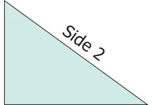
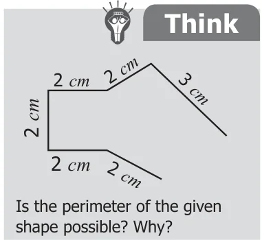
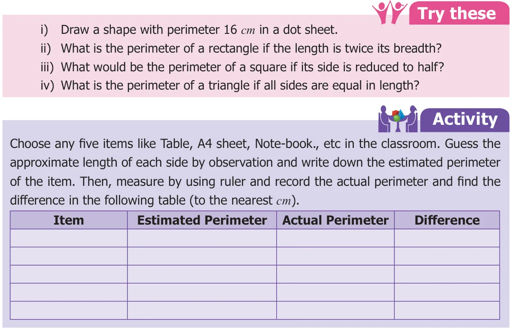
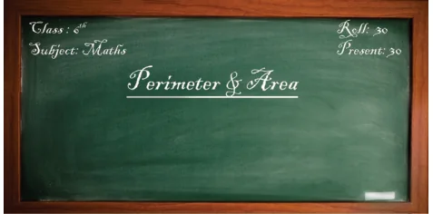
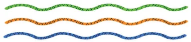
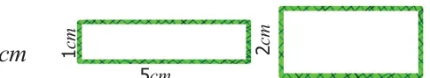
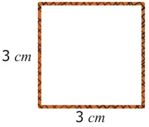
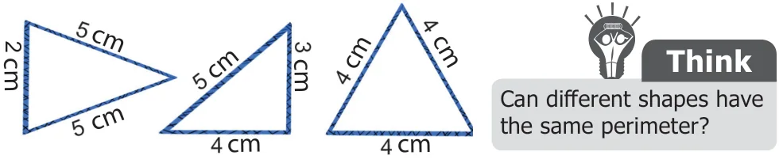

Observe the following shapes and answer the questions given below:
- Mark the closed shapes as '' and open shapes as 'x'.
- Find the measure of the boundary of closed shapes by using a ruler.
- Which closed shape has the shortest boundary?
- Which closed shape has the longest boundary?
The length of the boundary of any closed shape is called its perimeter. Hence, 'the measure around' of a closed shape is called its perimeter. The unit of perimeter is the unit of length itself. The units of length may be expressed in terms of metre, millimetre, centimetre, kilometre, inch, feet, yard etc.,

3.2.1 Perimeter of a Rectangle length
Perimeter of a rectangle = Total boundary of the rectangle = length + breadth + length + breadth
= 2 length + 2 breadth = 2 (length + breadth)
Let us denote the length, breadth and the perimeter of a rectangle as \(l\), \(b\) and \(P\) respectively.
Perimeter of the rectangle, \(P = 2 \times (l + b)\) units
For the pathway shown in the figure, the outer _{D} Pathway _{C} boundary of the pathway is PQRS and its inner
boundary is ABCD.
Example 1 If the length of a rectangle is 12 cm and the breadth is 10 cm, then find its perimeter.
Solution \(l = 12\) cm, \(b = 10\) cm
\(P = 2(l + b)\) units \(= 2(12 + 10) = 2 \times 22 = 44\) cm
Perimeter of the rectangle is 44 cm.
3.2.2 Perimeter of a Square
Perimeter of a square = Total boundary of the square = side + side + side + side \(= (4 \times \text{side})\) units
If the side of a square is 's' units, then Perimeter of the square, \(P = (4 \times s)\) units \(= 4s\) units.
Note
- In a square, all the sides are equal in length.
- The perimeter of a regular shape with any number of sides = number of sides x length of a side
Example 2 The side of a square is 5 cm. Find its perimeter.
Solution \(s = 5\) cm
\(P = (4 \times s)\) units \(= 4 \times 5 = 20\) cm
Perimeter of the square is 20 cm.

3.2.3 Perimeter of a Triangle
Perimeter of a triangle = Total boundary of the triangle = side 1 + side 2 + side 3
If three sides of a triangle are taken as a, b and c, then the Perimeter of the triangle, \(P = (a + b + c)\) units.
Example 3 Find the perimeter of a triangle whose sides are 3 cm, 4 cm and 5 cm.

Solution \(a = 3\) cm \(b = 4\) cm \(c = 5\) cm
\(P = (a + b + c)\) units
\(= 3 + 4 + 5 = 12\) cm
Perimeter of the triangle is 12 cm.

Example 4 Find the length of the rectangular black board whose perimeter is 6 m and the breadth is 1 m.
Solution Perimeter of the black board, \(P= 6 m\) Breadth of the black board, \(b=1 m\) length, \(l =\)?

\(2(l + b) = 6\)
\(2(l + 1) = 6\)
\(l + 1 = \frac{6}{2} = 3\)
\(l = 3 - 1 = 2\) m
The length of the black board is 2 m.
Example 5 Find the side of a square shaped postal stamp of perimeter 8 cm. Solution Perimeter of the square, \(P= 8\) cm
\(4 \times S = 8\)
\(S = \frac{8}{4} = 2\) cm
The side of the stamp is 2 cm.
Example 6 Find the side of the equilateral triangle of perimeter 129 cm. Solution Perimeter of the equilateral triangle, \(P = 129\) cm
\(a + a + a = 129\)
\(3 \times a = 129\)
\(a = \frac{129}{3} = 43\) cm
The side of the equilateral triangle is 43 cm.
Example 7 Thendral, Tharani and Thanam are given a thread piece each of length 12 cm. They are asked to make a rectangle, a square and a triangle respectively with the thread for their Math activity. In how many ways, can they make the respective shapes?

Solution Thendral
Perimeter of the rectangle, \(P = 12\) cm
\(2(l + b) = 12\)
\(l + b = \frac{12}{2} = 6\)

The possible pairs of measures whose sum is 6 are (5,1) and (4, 2). Hence, Thendral can make a rectangle in 2 ways. She can make a rectangle of length 5 cm and breadth 1 cm and another one with length 4 cm and breadth 2 cm.
Tharani
Perimeter of the square, \(P = 12\) cm

\(4 \times s = 12\)
\(s = \frac{12}{4} = 3\) cm
Hence, Tharani can make only one square of side 3 cm.
Thanam
Perimeter of the triangle, \(P = 12\) cm
\(a + b + c = 12\) cm
The possible triplets of measures whose sum is 12 and also satisfying the triangle inequality are (2, 5, 5) ; (3, 4, 5) ; (4, 4, 4). Hence, Thanam can make 3 triangles of sides 2 cm, 5 cm & 5 cm; 3 cm, 4 cm & 5 cm and 4 cm, 4 cm & 4 cm.

Example 8 Find the cost of fencing a square plot of side 12 m at the rate of ₹15 per metre.
Solution Side of a square plot \(= 12\) m
Perimeter of the square plot \(= (4 \times s)\) units
\(= 4 \times 12 = 48 m\)
Cost of fencing the plot at the rate of ₹15 per metre \(= 48 \times 15 =\) ₹720/-
Try these
- Find the breadth of the rectangle with perimeter 14 m and length 4 m.
- The perimeter of an isoseles triangle is 21 cm. Find the measure of equal sides given
that the third side is 5 cm.